Individual portfolio for the rookie group project. This portfolio focuses on my own work in Stage 2 image quality assessment, model comparison, ClearML tracking, product demo integration, CI/CD explanation, and final reflection.
| Assessment focus | Where it is covered | Main evidence |
|---|---|---|
| Environmental impacts | Section 2 | training compute, storage, deployment impact with sources |
| Social impacts | Section 3 | seller feedback, fairness risk, transparency and human review |
| Problem design and project design | Section 4 | business context, ML task, datasets, requirements |
| POC design and implementation | Section 5 | Stage 2 POC code, metrics and training curve |
| Interim solution V0.1 | Section 6 | multi-model experiments, ClearML, model comparison |
| Final solution V0.2 | Section 7 | FastAPI, MOS service, UI, Cloudflared and CI/CD design |
| Communicate project results | Section 8 | business-facing result explanation and presentation evidence |
| Team reflection | Section 9 | specific interactions, feelings, learning, strengths and actions |
| Appendix and links | Section 10 | repo links, data links, code evidence map and references |
SmartQC is a two-stage AI product for e-commerce product image checking. The business problem is simple: sellers upload many product images, and manual checking is slow and not always consistent. Our idea is to give sellers a fast check before publishing, so they can fix weak images earlier.
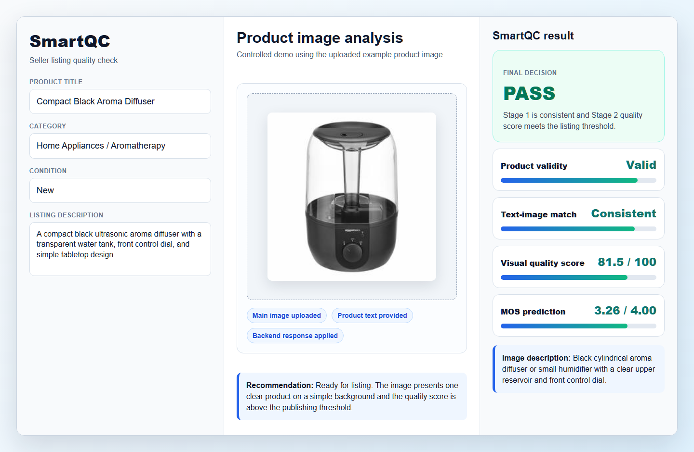
The MVP is not a full marketplace platform. It is a working demo that proves the key value: an uploaded product image can be checked by AI and converted into a clear listing recommendation.
I identify three environmental impacts in the context of SmartQC. I connect them to the whole product cycle: data ingestion, model training, experiment tracking, deployment, and inference. I also include what I did or would do to reduce the impact.
Stage 2 model work used repeated training runs. I compared ResNet18 and ResNet50, different input sizes, and several settings. This used compute time and electricity. Data centres and data transmission networks are already a meaningful part of global electricity use, and AI growth makes this issue more important (International Energy Agency, 2023). For SmartQC, the main compute cost is not one inference request. The bigger cost is repeated training and experimentation.
My mitigation was to avoid random trial-and-error. I used fixed train/validation/test splits and planned comparison groups. This made the experiments more useful and reduced waste. I also used MAE and validation curves to stop chasing a larger model just because it looked stronger.
The project uses large images, CSV labels, model checkpoints, logs, screenshots and ClearML experiment records. If everything is copied into GitHub or kept forever, the storage footprint becomes messy and wasteful. This is why I separated code from large data and model files. The repository keeps code and documentation, while large data and checkpoints are referenced through external/shared storage. This is also why .gitignore excludes model weights, logs, uploads and raw storage folders.
A deployed AI product still uses energy after training. If every listing image triggers heavy models without a reason, the product will waste compute. In SmartQC, Stage 1 acts as a gatekeeper. If an image is clearly invalid or mismatched, Stage 2 is skipped. This reduces unnecessary quality scoring. The Software Carbon Intensity idea is useful here because it encourages teams to think about emissions per software function, such as per check or per user request (Green Software Foundation, n.d.).
I identify three social impacts for SmartQC. The social impact is not only technical accuracy. It is also about sellers, reviewers, transparency, fairness and trust.
The positive impact is that sellers can receive feedback earlier. Instead of waiting for manual moderation, they can see whether the image is ready, needs review, or should be retaken. This can reduce repeated back-and-forth work for sellers and platform review teams. It also makes image quality rules easier to understand.
Image quality is partly subjective. A model trained on a public IQA dataset may not understand all marketplace product styles. Some product images may be creative, dark, reflective or taken in unusual backgrounds. If the model is used as a hard automatic decision, some sellers may be treated unfairly. International AI guidance stresses ideas such as fairness, transparency, accountability and human-centred AI (Organisation for Economic Co-operation and Development, 2019; UNESCO, 2021). For our product, this means SmartQC should support review instead of acting as final authority for every case.
A raw ML score is hard for a seller to understand. The UI should explain the result in normal language. In V2, the system shows product validity, text-image consistency, visual quality, and a next action. NIST AI RMF also highlights trustworthiness across design, development, use and evaluation of AI systems (National Institute of Standards and Technology, 2023). In my work, I tried to connect model scores to reasons, thresholds and a recommendation, so the user can understand what to do next.
The project is set in an e-commerce listing workflow. The user uploads a main product image and product text. The business goal is to reduce manual checking effort, improve listing quality, and give sellers faster and clearer feedback before publishing.
SmartQC is not only one model. It is a two-stage AI solution:
| Stage | Dataset | Purpose | My connection |
|---|---|---|---|
| Stage 1 | Amazon Berkeley Objects style product metadata and images | Create product image-text pairs and negative samples | I learned from this part and used it in the final product workflow, but I do not claim main ownership. |
| Stage 2 | KonIQ-10k IQA Database | Train MOS image quality regression model | This is my main technical contribution area. |
KonIQ-10k is a large image quality assessment database with 10,073 quality-scored images and 1.2 million crowd-sourced ratings from 1,459 workers, according to the official database page and paper (Hosu et al., 2020; Multimedia Signal Processing Group, n.d.). This made it suitable for the Stage 2 quality scoring work.
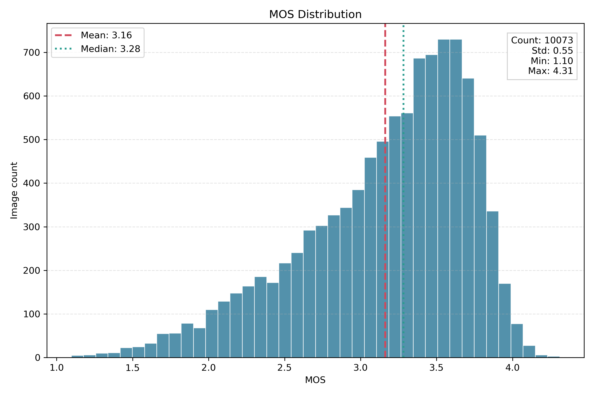
In the early project stage, I helped set up the team workspace and contributed to the two-stage idea: first check whether the image is relevant, then check quality. I also helped discuss dataset options, product feasibility, technical risks and business value. Later, I mainly developed the Stage 2 path in more depth.
The final requirements I worked toward were practical: image upload, optional product text, quality score, plain recommendation, and demo access. I learned that requirements are not only a document. They decide what model output should look like in the UI.
The POC proved that Stage 2 image quality scoring could work. My focus was to build a ResNet-based MOS regression workflow using KonIQ-10k. I started with a relatively simple training setup, then evaluated it using clear metrics.
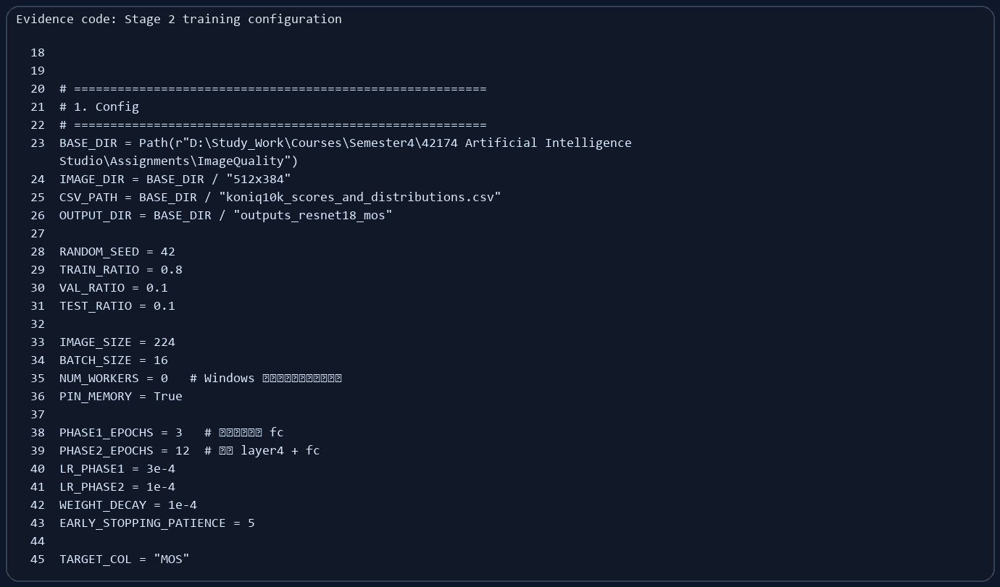
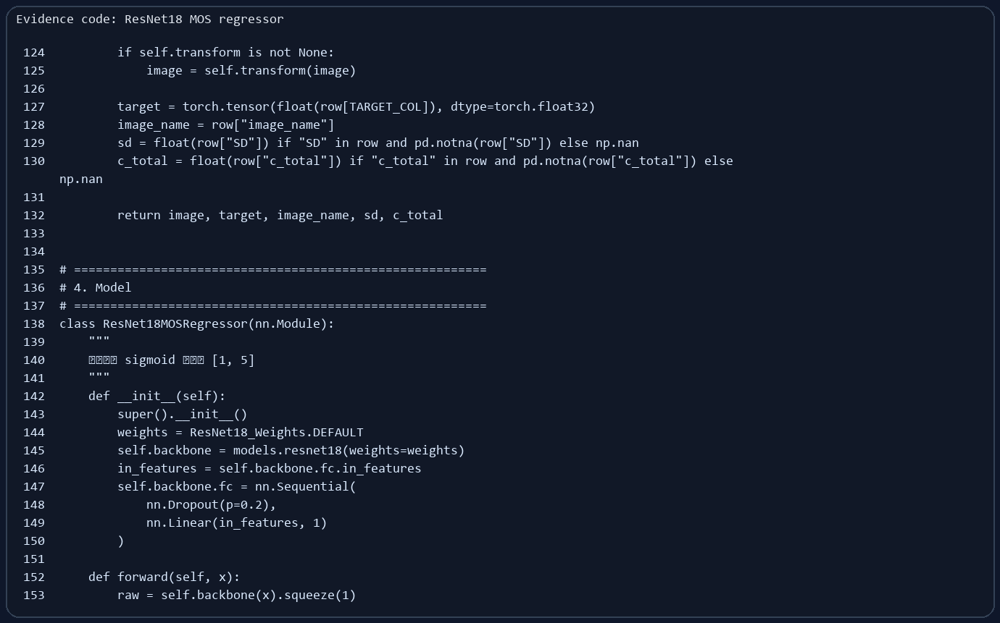
I did not only train a model once. I saved train/validation/test splits, checkpoints, training logs and test outputs. This helped the POC become repeatable. The test summary showed:
| Metric | Value from test_summary.json | Meaning |
|---|---|---|
| Best epoch | 15 | The best validation result was selected by evidence. |
| Test MAE | 0.2097 | Average MOS error was around 0.21 on the test set. |
| Test RMSE | 0.2699 | Shows overall error size. |
| PLCC / SRCC | 0.875 / 0.843 | The predictions had strong linear and rank correlation with true MOS. |
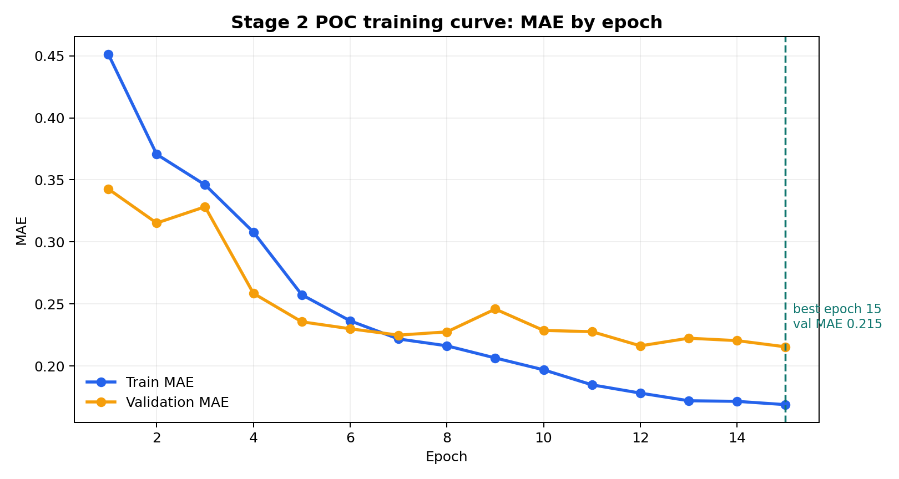
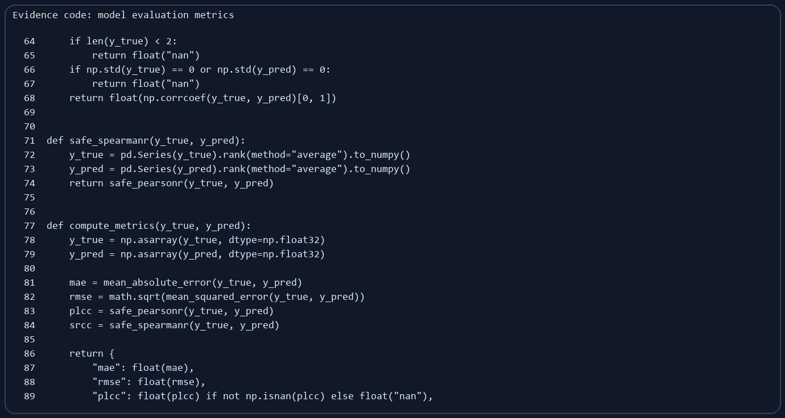
From this POC, I learned that a model result is stronger when it is saved with configs, splits, logs and test predictions. Without those files, the score is hard to trust later.
In the interim solution, I moved Stage 2 from a small POC mindset to a more systematic model development process. The main change was controlled experiment comparison and ClearML tracking.
I designed the comparison around two CNN backbones and multiple training settings. I wanted to know whether a deeper model was always better, or whether input size and preprocessing mattered more. This was important because product image quality depends on details such as blur, exposure and object clarity.
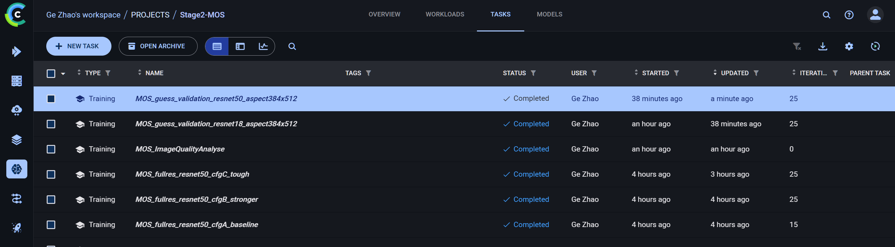
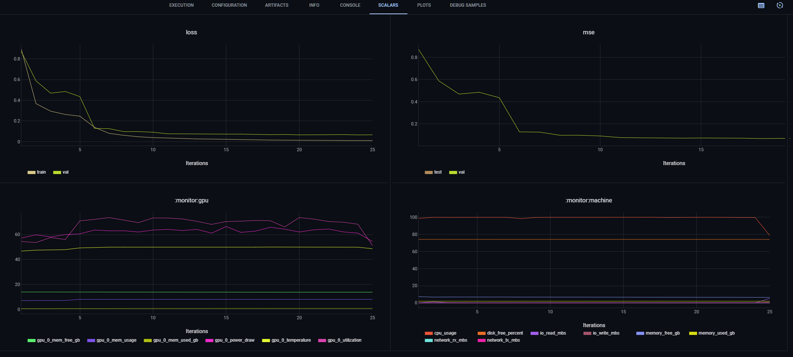
The result was not exactly what I first expected. I thought ResNet50 would clearly win because it is deeper. But the comparison showed that input setting and aspect-ratio preservation were very important. The best result in the comparison table was ResNet18 with aspect 384x512, while ResNet50 aspect 384x512 was close. This made me think more carefully about preprocessing, not only model depth.
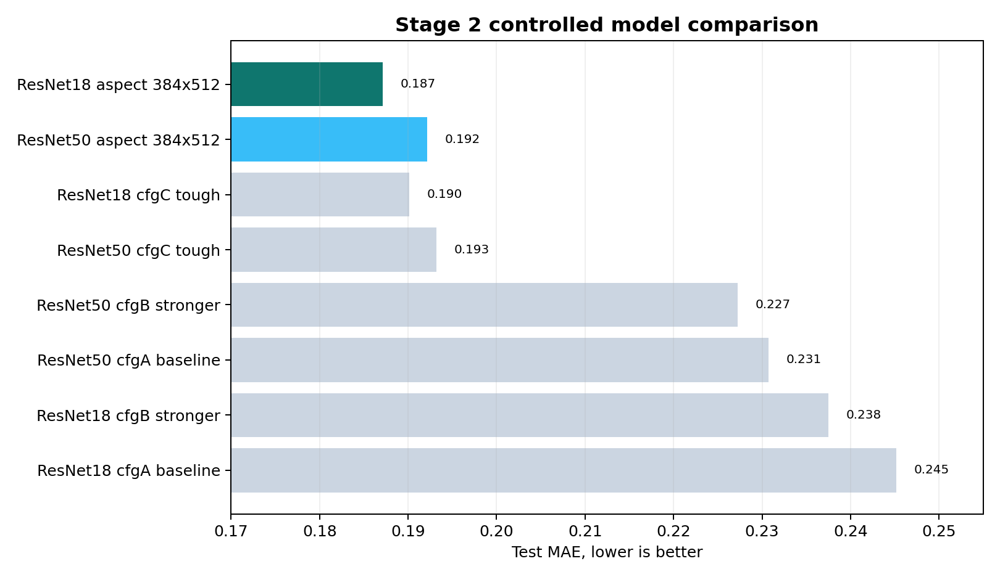
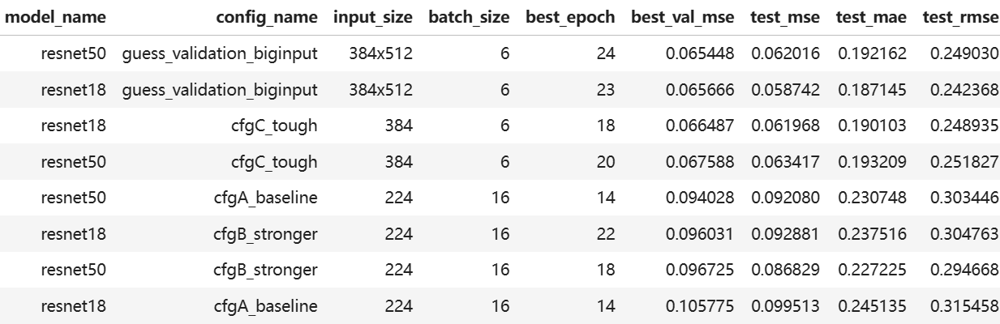
The final solution connected separate model work into a working product demo. This is where the project started to feel less like a notebook and more like an AI product.
The final design has a frontend, a FastAPI backend, two AI services, a rule-based listing decision layer, draft storage and demo deployment support.
| Component | Purpose | Evidence |
|---|---|---|
| Static frontend | Seller listing form, image upload, SmartQC result panel | index.html, app.js, styles.css |
| FastAPI backend | Receives image and text, calls Stage 1 and Stage 2 services | backend/main.py |
| Stage 1 service | CLIP product validity and text-image consistency check | backend/clip_service.py |
| Stage 2 service | Loads MOS model and predicts quality score | backend/mos_service.py |
| Draft store | Saves demo listing records and uploaded image files | backend/draft_service.py |
| Deployment path | Vercel frontend, Python backend, Cloudflared public demo link | README, vercel.json, Cloudflared slide |
The backend decides whether Stage 2 should run. If Stage 1 detects a clearly invalid image or a mismatch, Stage 2 is skipped. This saves compute and gives a clear reason to the user. If the image passes Stage 1, Stage 2 predicts a quality score. Then the final rule returns pass, review or reject.
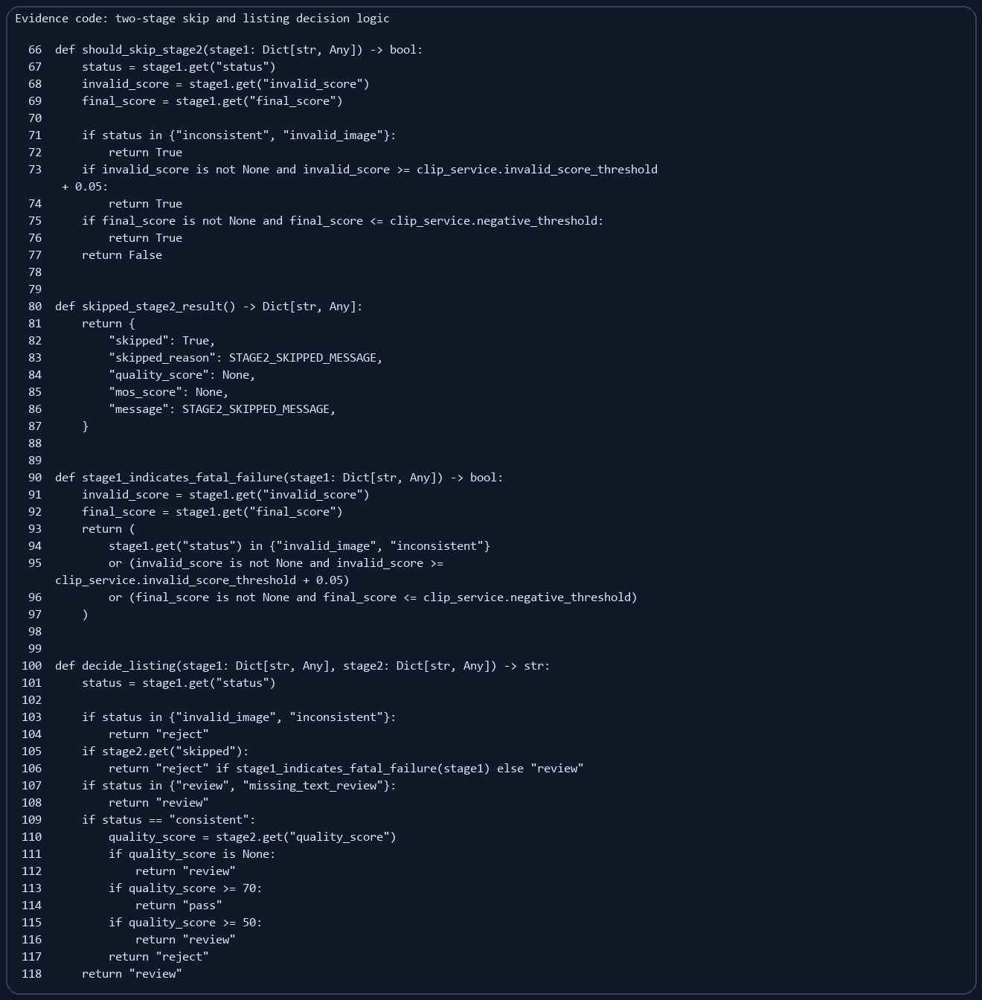
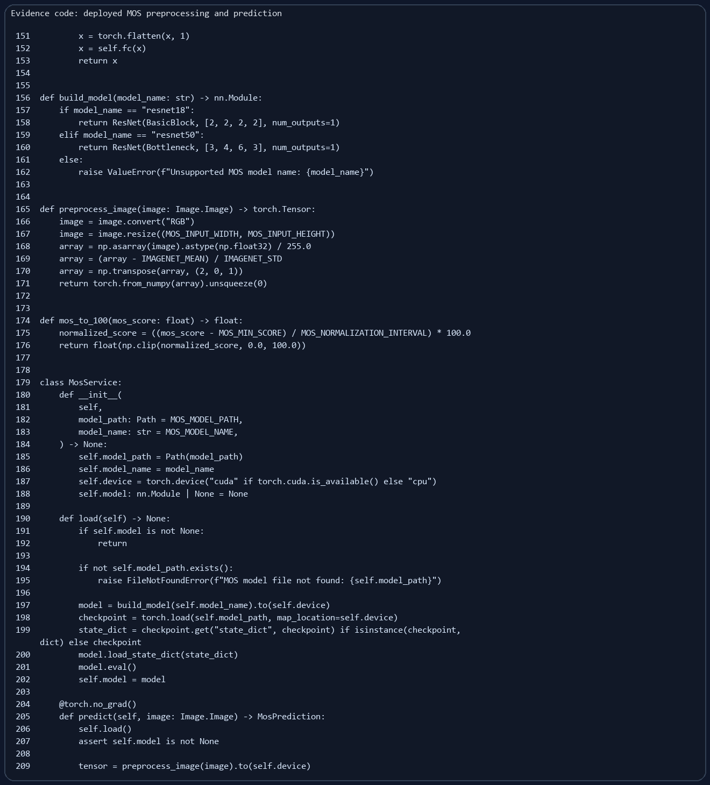
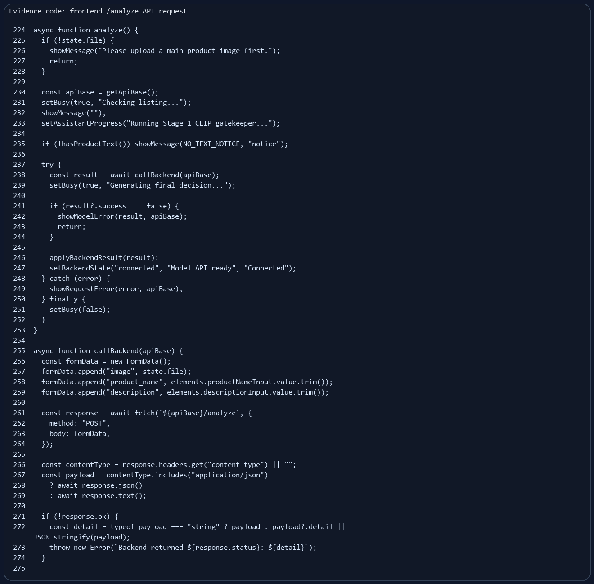
The current repository has Vercel frontend configuration and backend run instructions. I also prepared CI/CD workflow explanation for the final presentation. The intended GitHub Actions workflow is to check dependency installation, basic import/runtime checks, model file policy, and deployment readiness. Secrets such as ClearML keys or deployment tokens should go into GitHub Secrets, not into repo files.
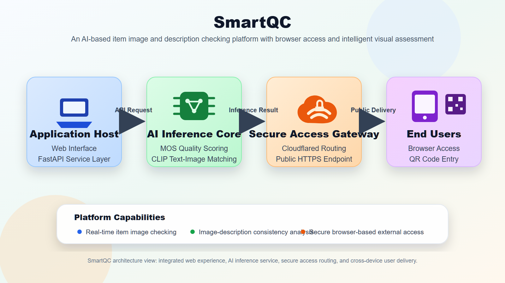
Cloudflared is not full production deployment. I treat it as a demo access method for tutors and teammates to test the product quickly.
I tried to communicate the project result in a way that a business audience can understand. I did not only say "the model has a lower MAE". I connected the model result to seller value, platform review efficiency, and product readiness.
They get quick feedback before publishing. The output is pass, review or reject, not only a raw model number.
The system can reduce obvious invalid or low-quality submissions and make manual review more focused.
ClearML and comparison results make model improvement more traceable, instead of relying on memory or one notebook.
This section is based on my four reflective journals and my final project experience. I write it in first person because it is about how the project team influenced me and how I influenced the team.
One positive interaction was the early discussion about project direction. I put forward the two-stage pipeline idea, and the team discussed whether it made sense for product image checking. This helped me learn that a good AI project needs both technical feasibility and business meaning. My teammates also helped me think more about how a seller or reviewer would understand the result.
Another positive interaction happened during the later presentation work. When I prepared Stage 2, ClearML, Cloudflared and CI/CD content, teammates asked questions about how to explain them more simply. This pushed me to translate technical words into a product story.
The main challenge was progress pressure near the final deadline. Some parts were slower than I expected, and I felt anxious because the model, UI, deployment story and final documents had to connect together. I sometimes pushed teammates directly. This helped the project move, but I also know it could make the communication feel stressful.
Another challenge was that I sometimes worked on technical problems for too long by myself before explaining the uncertainty to others. For example, when model comparison results did not match my first assumption, I needed time to change my thinking from "ResNet50 should be better" to "the result is telling me preprocessing matters".
| Area | Reflection |
|---|---|
| My role | I acted as a technical contributor and also a progress pusher. My main technical role was Stage 2 model work and experiment tracking. |
| Feelings | I felt confident when technical work was moving, but anxious when deadlines were close and some parts were not connected. |
| Strength | I can turn a vague technical idea into runnable experiments and evidence. I am willing to take responsibility. |
| Weakness | I can become impatient under pressure. I also sometimes explain decisions too fast because I already understand the background. |
My teammates influenced me by reminding me that the project is not only about model performance. They made me think about presentation, UI, business value and simple explanation. This changed how I wrote slides and how I explained results. I learned that a model is only useful if the user can understand the output and trust the workflow.
I think my influence was mainly technical structure and momentum. I helped turn Stage 2 from one POC into a more complete experiment process. I also pushed the team to connect the project into a final demo story: data, model, UI, deployment and product value. This made the final project easier to present as one product, not several separate files.
This table summarises my claimed performance levels against the AT5 rubric. I keep the claims connected to evidence in this report.
| Rubric criterion | Claimed level | Short reason |
|---|---|---|
| Environmental impacts | Level 4 | I identify three impacts across training, storage and deployment, with sources and mitigation. |
| Social impacts | Level 4 | I identify seller benefit, unfair rejection risk, and transparency/human review need, with sources. |
| Problem design | Level 4 | The use case is a real two-stage product workflow using multimodal matching and IQA regression. |
| Project design proposal | Level 4 | I contributed to the two-stage product idea and helped shape requirements around product image checking and quality scoring. |
| Design of POC | Level 4 | I designed Stage 2 POC around KonIQ-10k, MOS regression, metrics and repeatable splits. |
| Design of interim solution V0.1 | Level 4 | I designed controlled experiments and ClearML tracking for multi-model comparison. |
| Design of final solution V0.2 | Level 4 | I helped connect Stage 2 output with backend logic, UI, deployment and product recommendation. |
| Implementation of POC | Level 4 | Code evidence shows training config, ResNet model, metrics, logs and saved outputs. |
| Implementation of interim solution V0.1 | Level 4 | Evidence includes ClearML screenshots, model comparison table and controlled run results. |
| Implementation of final solution V0.2 | Level 4 | Evidence includes backend MOS service, decision logic, frontend API call and UI screenshot. |
| Communicate project results | Level 4 | I present a structured product story with visuals and business meaning. |
| Communication skills | Level 3 | I communicated actively and clearly, but I still need to improve tone and patience under pressure. |
| Reflection on team interactions | Level 4 | I give detailed self-reflection, team influence, learning evidence, and future actions. |
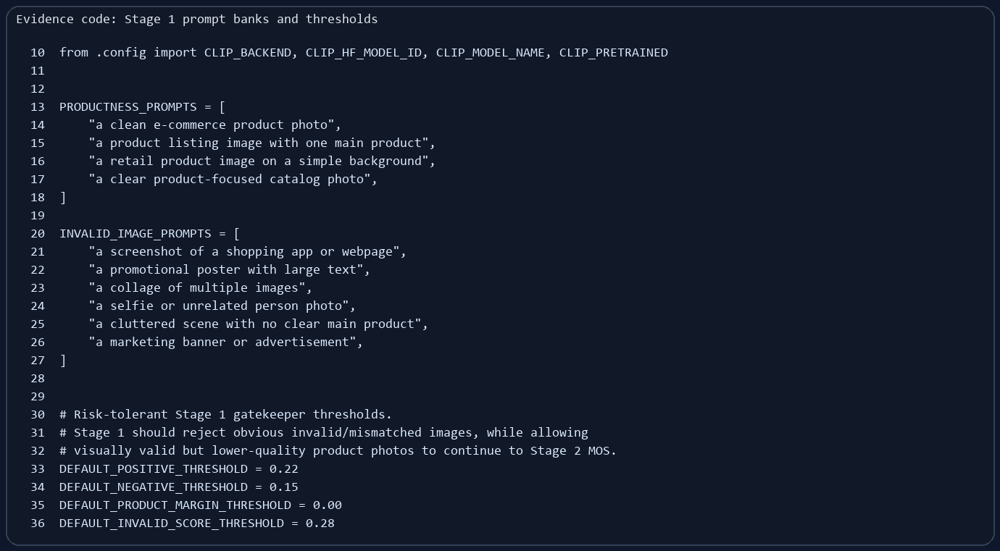
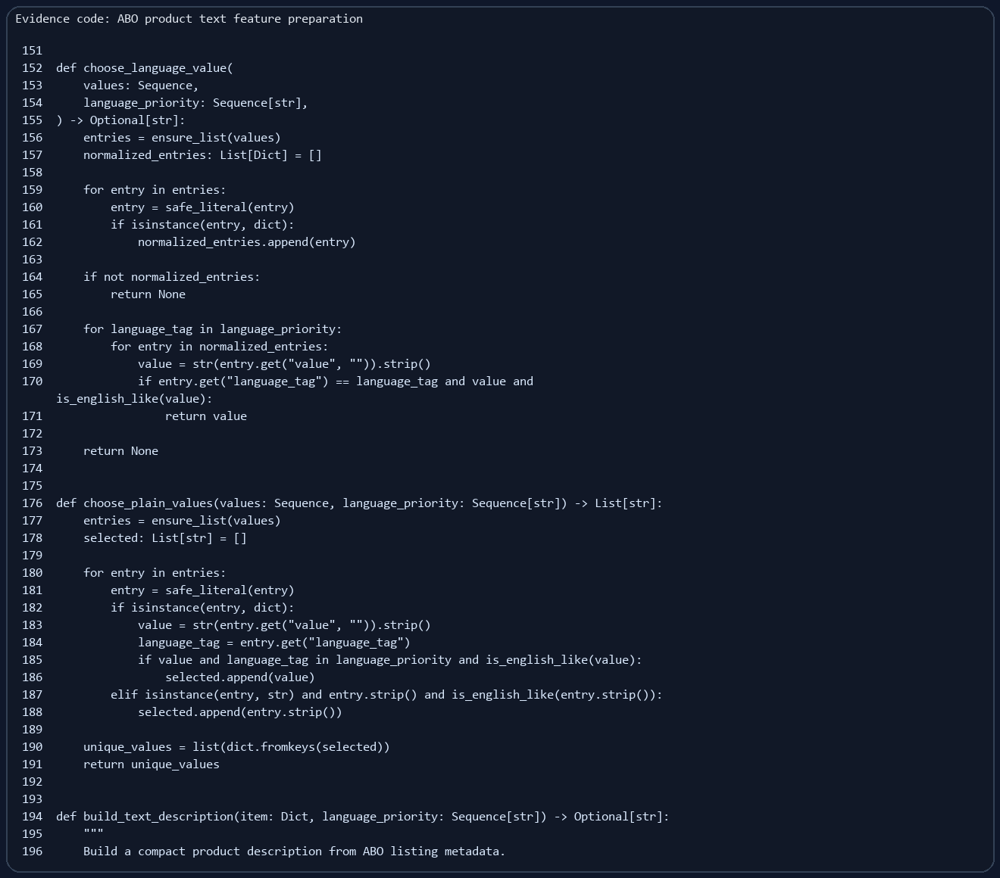
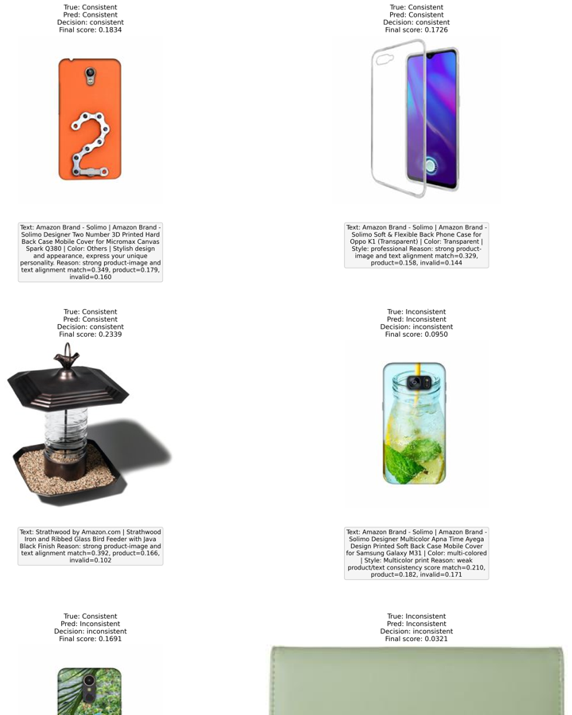
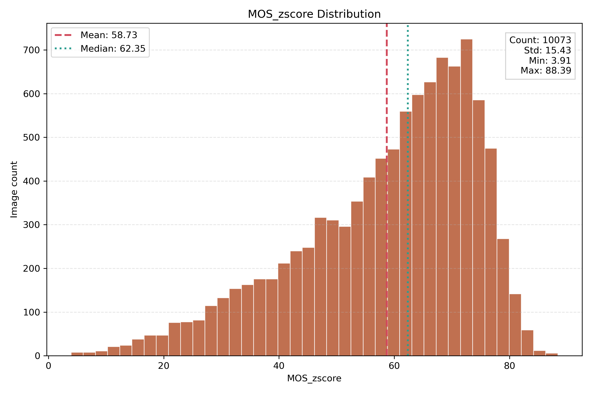
| Evidence area | Online evidence links |
|---|---|
| Stage 2 POC | training configuration screenshot, ResNet MOS model screenshot, evaluation metric screenshot, training MAE curve |
| Model comparison | ClearML task screenshot, ClearML scalar screenshot, model selection chart, model comparison table |
| Final backend | two-stage backend decision screenshot, MOS service screenshot, Stage 1 prompt and threshold screenshot |
| Frontend UI | English SmartQC GUI result screenshot, frontend API call screenshot |
| Deployment | Cloudflared workflow diagram, portfolio evidence README |
| Reflection | final portfolio PDF and editable HTML source |
Green Software Foundation. (n.d.). Software Carbon Intensity. Retrieved May 24, 2026, from https://greensoftware.foundation/standards/sci/
Hosu, V., Lin, H., Sziranyi, T., & Saupe, D. (2020). KonIQ-10k: An ecologically valid database for deep learning of blind image quality assessment. IEEE Transactions on Image Processing, 29, 4041-4056. https://doi.org/10.1109/TIP.2020.2967829
International Energy Agency. (2023, July 11). Data centres and data transmission networks. https://www.iea.org/energy-system/digitalisation/data-centres-and-data-transmission-networks
Multimedia Signal Processing Group. (n.d.). KonIQ-10k IQA database. Retrieved May 24, 2026, from https://database.mmsp-kn.de/koniq-10k-database.html
National Institute of Standards and Technology. (2023, January 26). AI risk management framework. https://www.nist.gov/itl/ai-risk-management-framework
Organisation for Economic Co-operation and Development. (2019). OECD AI principles. https://www.oecd.org/en/topics/ai-principles.html
UNESCO. (2021). Recommendation on the ethics of artificial intelligence. https://www.unesco.org/en/articles/recommendation-ethics-artificial-intelligence
{kind=link}
{kind=link}
{kind=link}
{kind=link}
{kind=link}
{kind=link}
{kind=link}
{kind=link}
{kind=link}
{kind=link}
{kind=link}
{kind=link}
{kind=link}
{kind=link}